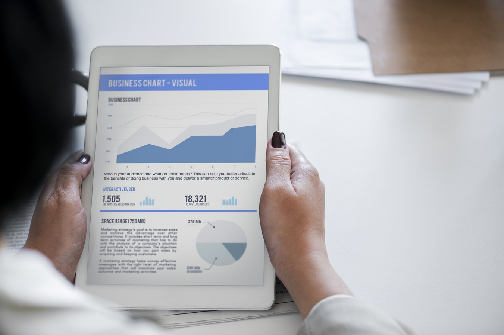

<올해의 팀장 추천서>
- 소비자 변화에 대응하는 전략 실현
- 데이터를 통해 일하는 방식 혁신
- 대외수상 내역
■ 추천 사유
상기 추천 대상자는 롯데홈쇼핑 빅데이터전략팀 팀장으로서 소비자 변화에 대응하는 전략을 적극적으로 실현하고 데이터를 통해 일하는 방식을 혁신하였습니다. 다양한 성과를 창출하여 조직 內에 기여한 바 '올해의 팀장'으로 적극 추천합니다.
1. 소비자 변화에 대응하는 전략 실현
■ 업계최초 유료회원제(L.CLUB) 성공적 런칭 (18年 10月 / 2.4만명 가입, 186억 매출)
① 목적: 자발적 충성고객 확보를 통한 매출 확대
② 추진 배경: 주문고객 수 정체 / 5회 이상 주문고객 감소
③ 추진 경과: 고객 관점의 혜택 설계(복잡한 사용조건 지양, 서비스는 양보다 질)
- 멤버십 비용을 상회하는 혜택 제공
- 매월 최상위 등급 쇼핑 쿠폰 발급
- 상품 구매시 L.Point 5배 추가 적립
- 런칭 後 고객 확보 캠페인 진행
④ 성과: L.CLUB 회원 고객 목표 초과달성 (18년 목표:1만명)
- 가입고객 2.4萬名 (10/1~12/19, 18年 2.7萬名 예상)
- 매출액: 159억원 (주문 객단가 79만원, 일반고객의 4배)
- 관련 뉴스 111건 (10월 66건, 11월 45건)
■ 상품 추천 서비스 고도화를 통한 매출 증대 (18年 추천서비스 매출 554억)
① 목적: 상품 추천을 통한 체류시간 증대 및 매출 증대
② 추진 배경: 고객이 필요한 상품만 선별 제공 경쟁력 확보
③ 추진 경과
- 알고리즘 개선을 통한 추천 정확도 향상
- 추천 영역 확대 (기획전 추천, 검색어 관련 추천, 전문관 추천)
④ 성과: 19年 1~11月 매출 554억 (월평균 50.3억, 전년대비 102% 신장)

2. 데이터를 통해 일하는 방식 혁신
■ 업계최초 AI편성 시스템 구현 (18年 8月)
① 목적: 방송 예정 상품 매출 예측하여 최적의 조합으로 자동 편성하는 시스템 구현
② 추진 배경: 感에 의한 의사 결정, 실적 부진 원인 파악 難
③ 추진 경과:
- 분석영역 확장을 위한 빅데이터 추가확보(시청률 데이터(LG U+), 중기 날씨데이터)
- 편성 요인별 매출 영향도 분석
- AI 머신러닝을 활용한 상품별 매출 예측 모델링 개발
- 시간대별 최적 상품 자동 배정 시스템 구현
④ 성과: 트렌드 반영한 월 최적시간 편성
- 기존 시간대 탈피, 신규 시간대 성공적 운영
- 편성 관련 Insight 정보 자산화
※ 2차 성능 업그레이드 및 OneTV 편성 자동화 확대 적용 계획(2019年 상반기)
■ 빅데이터기반 업무 프로세스 운영
① 목적: 트렌드 및 영업 환경 예측을 통한 유기적 마케팅,편성,상품전략 프로세스 수립
② 추진경과
- 월간 영업환경 분석 발간 (홈쇼핑 트렌드 및 영업환경 예측)
- 사내 주요 이슈 분석 (고객, 상품, 매체, 방송 PGM등)
③ 주요성과: 분석 기반 영업 운영 프로세스 구축영업환경분석
- 내, 외부 홈쇼핑 트렌드 분석을 통한 영업환경 선제적 대응 (D-2개월)
- 분석 기반 의사결정 지원 (마케팅, 편성, 상품 간 유기적 전략 수립)
- 빅데이터 분석 포털 구축 (트렌드 및 시장분석 리포트 전사 공유)
3. 대외 수상
■ 제5회 코리아빅데이터어워드 통계청상 수상 (18년 10月)
① 응모분야: 빅데이터 기술 및 전략을 활용한 비즈니스 분야에 응모
② 제출내용: 롯데홈쇼핑 빅데이터 2大 전략 및 실행 내역
- 데이터 기반 의사결정 지원
(빅데이터 확보, 빅데이터 기반 업무프로세스 운영, 분석 포털 구축, AI편성 구축)
- 고객 서비스 강화
(개인화 추천서비스, 빅데이터 기반 주문 상담 서비스, 스마트 홈쇼핑 구현)
③ 수상내역: 통계청장상